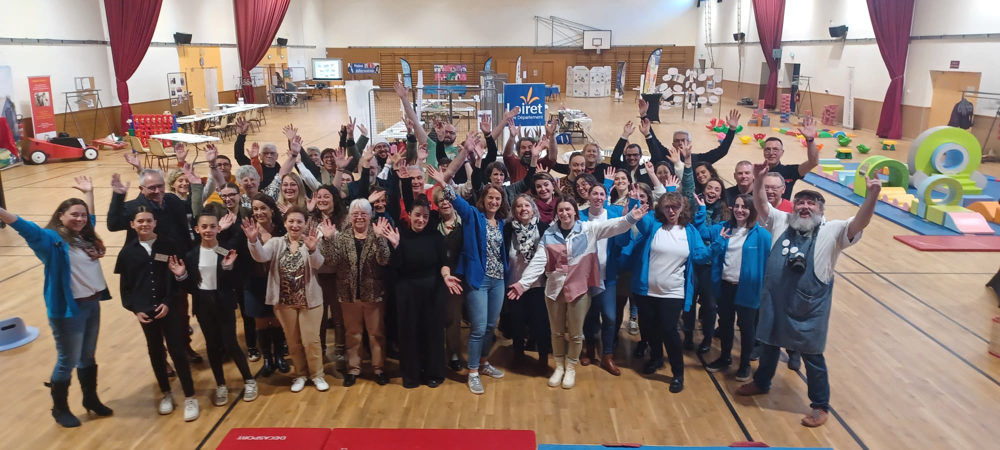

Loisirs & Culture
📚 Bibliothèques
Réseau de bibliothèques sur le territoire
Programmation culturelle régulière
🗺️ Office de Tourisme
Informations touristiques et animations
Briare, Châtillon-sur-Loire
🎲 Ludothèques
Ludotm'obile : ludothèque itinérante
Jeux et animations pour tous âges
🖥️ Micro-Folie Briare
Musée numérique et espace culturel
Collections des plus grands musées
🏛️ Maison des Pays
Patrimoine et histoire locale
Expositions et visites
⚽ Clubs sportifs
Football, tennis, judo, danse, gymnastique...
Nombreuses associations sportives